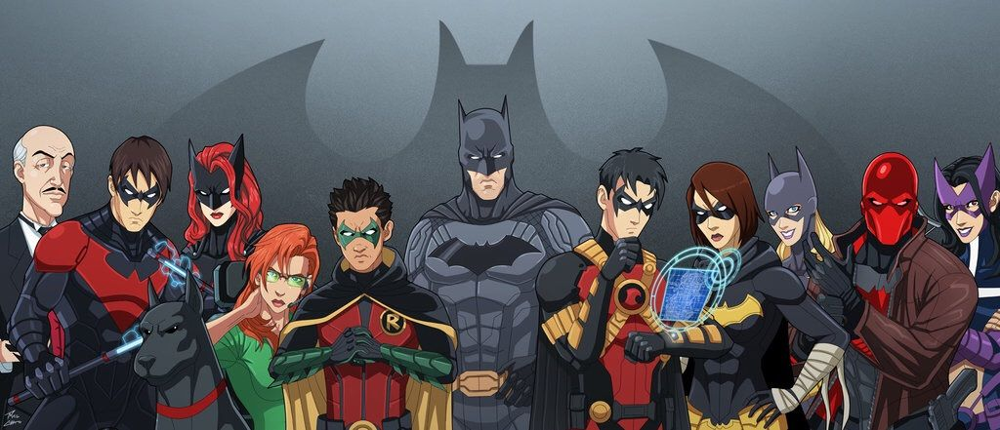

My Family
As a matter of fact writers really messed up with my marriage.In golden age I got married to Selina Kyle (Catwoman) and had a daughter Helena Wayne (Huntress).In some other versions I got married to Taliah Al Ghul and had a son Damien Wayne-one of my favourite Robins.But finally they all agreed to make a constant version of me in which my son Damien was created from genetic samples of mine and my arch villainess Taliah Al Ghul and gestated in an animal's womb.
THe Bat-Family
The Batman Family operates like a network of similarly-minded superheroes who operate in and around Gotham, with me as its head. The group usually seen interacting with one another and assisting in each other's cases in their respective series. Although some members occasionally resent my intrusion into their lives, all respect me , rarely challenge me. Most of the members also have a strong rapport with the me due to their long and close relationships over the years, and considers me a close friend as well as ally. It has also been implied through my history that this network serves as a surrogate family for me and keeps me from slipping too far into my ruthless vigilante persona.

Affiliations